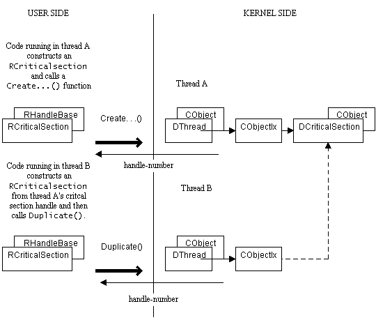

|
| |
A handle in one thread (a thread-relative handle) may be duplicated in another thread within the same process.
Typically, thread B may want to access a Kernel object which already exists and for which thread A, within the same process, already holds a handle.
For example, if thread A has a handle on a critical section, it is insufficient to pass a copy of the handle, an RCriticalSection, to thread B. The handle passed to thread B does not refer to anything known by thread B. In order for thread B to gain a valid handle on the critical section, the handle must be duplicated.
In thread B, then:
...
RCriticalSection cs;
cs.SetHandle(h.Handle()); // where h is an RCriticalSection, the
// handle to the critical section, and
// passed from thread A code.
cs.Duplicate(tA); // where tA is an RThread, the handle to
// thread A, and passed from threadA code.
// Duplicate also opens the resulting
// handle, cs.
...
The dotted line in the following diagram shows the effect of this:

Note that for process-relative handles, there is no need to use Duplicate(); the handle passed from thread A to thread B can be used directly.
|
There are two types of generic handle, one for threads and one for processes, both of which are created using the default constructor of the appropriate handle.
RThread thisThread; // Generic handle meaning "the current thread"
RProcess thisProcess; // Generic handle meaning "the current process"
An important fact about generic handles is that they make no claim on the object that they refer to, so you don't need to call Close() when you get rid of them. This is not true of specific handles, which always add a reference to the object that they refer to, preventing that object being fully destroyed until all specific handles have been closed.
Use Duplicate() to make a specific handle from a generic handle; for example:
RThread thisThread; // generic handle
TInt err=thisThread.Duplicate(thisThread); // a specific handle
...
thisThread.Close(); // don't forget.
|
The second parameter passed to Duplicate() specifies whether the resulting handle is specific to the calling thread, or is valid for all threads in the same process.
Duplicate() offers a way of making a handle, which is specific to a thread, known to all the threads in a process.
This does not work for all handles but RLibrary is an example of one where it can make sense to promote an RLibrary thread-relative handle to a process-relative handle because this ensures that the library will not be automatically unloaded when the original thread terminates. For example:
...
_LIT(KMyLib,"MYLIB");
...
RLibrary threadLibrary;
err=threadLibrary.Load(KMyLib); // Load up a DLL, this gives
// a thread-specific handle.
RLibrary aDup=threadLibrary; // Copies handle without
// doing Open().
err=threadLibrary.Duplicate(RThread());// Overwrite the original.
if (err==KErrNone)
{
aDup.Close(); // Close the original.
}
...
Copyright ©2002 Symbian Ltd. 6.1-00174 |
|